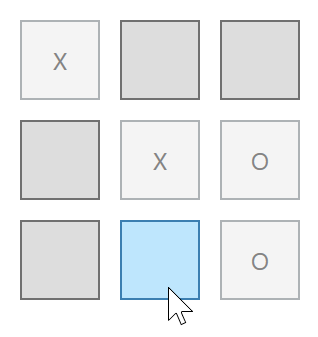

Doel: werken met sender object.
Bouw een eenvoudig OXO-spel waarbij afwisselend "O" of "X" verschijnt. De winnaar bepalen is niet zo eenvoudig en maakt geen deel uit van deze oefening.
Meerdere controls kunnen dezelfde event handler gebruiken. In de event handler is sender de control die het event veroorzaakte (zie theorie).
We gebruiken het in deze oefening om één Click-event aan de 9 buttons te koppelen.
Gegeven is een 3x3 Grid met buttons
Click event toe aan de eerste button. Hernoem de event handler naar OxoButton_Click (gebruik de rechtermuisnknop).
Click attribuut met verwijzing naar de eventhandler naar de andere 8 buttons.
sender object. Toon afwisselend een 'O' of 'X'. Disable telkens de button.
